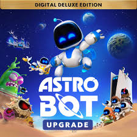
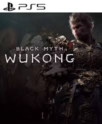
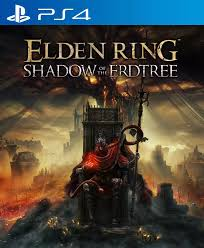

Donde cada reseña tiene su encanto
Donde cada reseña tiene su encanto
Donde cada reseña tiene su encanto
Donde cada reseña tiene su encanto
Porque un juego no es solo botones y gráficos. Es ese primer mundo que exploraste sin mapa, ese jefe que venciste después de intentarlo mil veces, o esa historia que te hizo llorar cuando menos lo esperabas. Un buen juego te habla, te reta, te acompaña. Se vuelve parte de tu historia, no solo de tu consola. Y aunque pasen los años, algo en ti siempre recordará cómo se sintió jugarlo por primera vez. Porque algunos juegos no se terminan… se quedan contigo.

El 2024 fue un año clave para la industria de los videojuegos, marcado por títulos que no solo rompieron récords de ventas, sino que también redefinieron lo que significa jugar. Astro Bot conquistó a los fans con su homenaje a la historia de PlayStation y su jugabilidad encantadora; Black Myth: Wukong deslumbró al mundo con su espectacular narrativa basada en la mitología china y un apartado visual impactante; mientras que Elden Ring: Shadow of the Erdtree reafirmó el poder narrativo y artístico de FromSoftware, entregando una expansión tan profunda como un juego nuevo. Estos lanzamientos no solo fueron éxitos comerciales, sino que tocaron emocionalmente a millones de jugadores, consolidando al 2024 como un año inolvidable en la historia del gaming.
Desarrollador: Team Asobi
Distribuidor: Sony Interactive Entertainment
Género: Plataformas / Aventura
Duración estimada: 10–15 horas
Plataformas: Exclusivo para PlayStation 5
Idioma: Voces y textos en español, inglés, japonés y más
Clasificación: E (Everyone) – Apto para todo público
Fecha de lanzamiento: 6 de septiembre de 2024
Sinopsis:Astro regresa con una misión intergaláctica que celebra los 30 años de historia de PlayStation. Recorre más de 80 niveles repletos de homenajes, sorpresas y mecánicas innovadoras que aprovechan al máximo el mando DualSense. Un juego que combina ternura, nostalgia y creatividad en una experiencia inolvidable para toda la familia.
tralier:
Desarrollador: Game Science
Distribuidor: Game Science
Género: RPG de acción / Aventura mitológica
Duración estimada: 25–35 horas
Plataformas: PC, PlayStation 5, Xbox Series X|S
Idioma: Voces en chino mandarín, subtítulos en español e inglés
Clasificación: M (Mature) – Mayores de 17 años
Fecha de lanzamiento: 20 de agosto de 2024
Sinopsis:Basado en la obra clásica china Viaje al Oeste, encarnas al Rey Mono en un mundo repleto de dioses, demonios y secretos. Con un combate espectacular, criaturas legendarias y una dirección artística asombrosa, Black Myth: Wukong no solo es una carta de amor a la mitología oriental, sino también un nuevo hito en los RPG de acción.
trailer:
Desarrollador: FromSoftware
Distribuidor: Bandai Namco Entertainment
Género: RPG de acción / Mundo abierto / Expansión
Duración estimada: 20–30 horas
Plataformas: PC, PS5, PS4, Xbox Series X|S, Xbox One
Idioma: Voces en inglés, subtítulos en español y otros idiomas
Clasificación: M (Mature) – Mayores de 17 años
Fecha de lanzamiento: 21 de junio de 2024
Sinopsis:Viaja a la Tierra Sombría, una región nueva que expande la historia de Elden Ring con más desafíos, secretos, armas y jefes. Esta expansión mejora todos los aspectos del juego base y propone una nueva narrativa marcada por la oscuridad, la melancolía y la épica. Una joya imperdible para los fanáticos del universo creado por Hidetaka Miyazaki y George R.R. Martin.
trailer:
Usuario: Jhonna Pala Ceron Ramirez
Fecha: Jueves 19 de Noviembre del 2924
No es solo un juego de plataformas, es un homenaje que se siente personal. Astro Bot me hizo recordar por qué empecé a jugar. Tiene algo cálido, casi nostálgico, que te acompaña en cada salto y en cada mundo lleno de detalles. No se trata de dificultad, sino de disfrutar, de sonreír con cada sorpresa, con cada guiño a la historia de PlayStation. Es un juego que abraza a su comunidad sin decirlo en voz alta, y por eso, conecta. Lo terminé con una mezcla de ternura y gratitud. A veces, lo más simple también puede ser lo más especial.

Usuario: Adrian Alejandro Arias Simbaña
Fecha: Domingo 26 de julio del 2925
No es un juego accesible para todos, pero sí profundamente impactante. Desde que empecé Black Myth: Wukong supe que estaba ante algo diferente. Tiene una fuerza visual que te deja sin palabras, pero también una historia silenciosa, con peso, que se va revelando a su ritmo. Jugarlo fue exigente, incluso frustrante a veces, pero también liberador. Hay algo en esa mezcla de mitología, combate y belleza que me hizo seguir, aunque doliera. Sentí que no solo estaba enfrentando enemigos, sino comprendiendo un legado. Me marcó más de lo que imaginaba.

Usuario: Juan Grabriel Narvaez Taco
Fecha: Martes 04 de septiembre de 2024
No es una expansión cualquiera, es una herida abierta que te invita a entrar. Shadow of the Erdtree no busca complacerte, busca retarte y hablarte en su lenguaje críptico y hermoso. Cada rincón del mapa esconde una historia que se siente perdida en el tiempo, y cada batalla es una prueba emocional. Me costó avanzar, no solo por su dificultad, sino por lo que despierta. Tiene un ritmo lento, pesado, pero necesario. Me dolió perder, me costó seguir, pero también me hizo sentir vivo. No salí igual que entré. Y eso, para mí, lo dice todo.